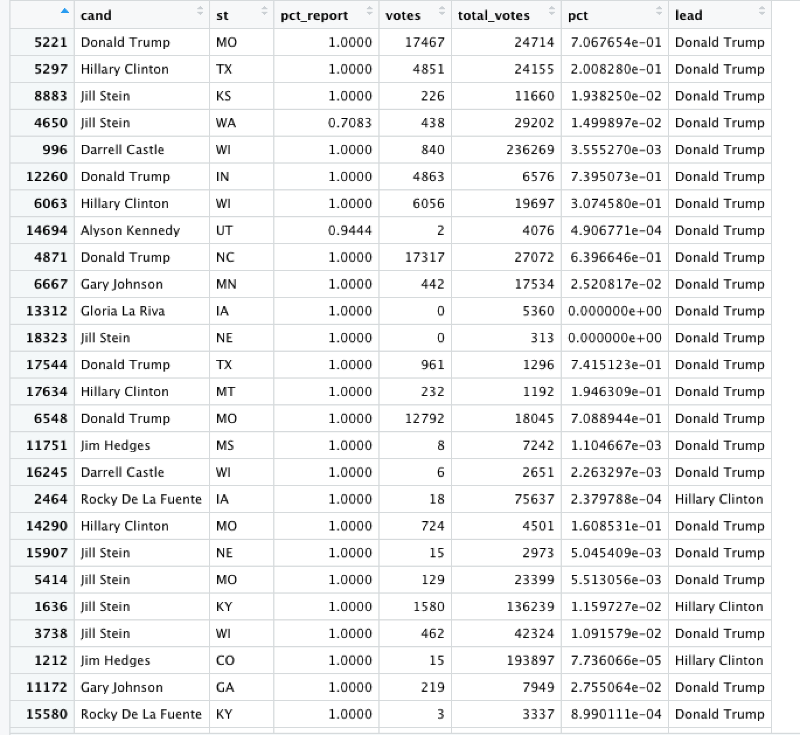

SVM
Source Code and Data
SVM(Python Language)
I chose the text of Trump's tweets and divided the statements made before and after Trump was elected president into two categories, and tried to use a decision tree to classify the tweets made before and after Trump was elected president
Screenshot of the text data

Linear SVM
Accuracy on training set: 0.986
Accuracy on testing set: 0.822
Hint:Regularization parameter. The strength of the regularization is inversely proportional to C. Must be strictly positive.
Accuracy on training set: 0.977 with regularization = 0.6
Accuracy on testing set: 0.818 with regularization = 0.6
By regularizing the model, I simplify the complexity of the model, but the performance degradation of the classification is not significant. I think a simple machine learning model would perform more consistently. Also, through the visual analysis of text data in the previous Bayesian section, we found that most of the data points are with clear boundaries, which may be one of the reasons why the linear SVM performs very well.
The confusion matrix reveals that Trump posted fewer tweets after the president-elect, but the model incorrectly discriminates tweets posted after the president-elect as pre-election tweets and tweets posted before the president-elect as post-election tweets, both of which make the model's performance in discriminating Trump's presidential-election tweets not good.Notice in the Bayesian visualization of the 3d plot that some of Trump's post and pre-presidential election statements are linearly indistinguishable within the same radial line.
SVM Kernal("RBF")
Accuracy on training set: 0.986
Accuracy on testing set: 0.822
Hint:Regularization parameter. The strength of the regularization is inversely proportional to C. Must be strictly positive.
Accuracy on training set: 0.858 with regularization = 0.6
Accuracy on testing set: 0.763 with regularization = 0.6
We know that some data points can't be seperated by a line.However, what if we wanted to apply SVMs to non-linear problems? How would we do that.
This is where the kernel trick comes in. A kernel is a function that takes the original non-linear problem and transforms it into a linear one within the higher-dimensional space. And this time, I choose rbf as the kernal. If you want to know more about the rbf kernal, I recommend you google it because it contains mathematical calculation and I don't want to put it into my website, which is not the focus point of the topic.
By regularizing the model, I simplify the complexity of the model, but the performance degradation of the classification. But this time, the degradation of the classification is significantly. Therefore, I need to cancel the regularization.
The confusion matrix reveals that Trump posted fewer tweets after the president-elect, but the model incorrectly discriminates tweets posted after the president-elect as pre-election tweets and tweets posted before the president-elect as post-election tweets.I was pleased that the kernel-based svm performed slightly better than the linear svm this time, especially in correctly distinguishing Trump's tweets after he was elected president.
SVM Kernal("sigmoid")
Accuracy on training set: 0.901
Accuracy on testing set: 0.828
Hint:Regularization parameter. The strength of the regularization is inversely proportional to C. Must be strictly positive.
Accuracy on training set: 0.869 with regularization = 0.6
Accuracy on testing set: 0.815 with regularization = 0.6
By regularizing the model, I simplify the complexity of the model, but the performance degradation of the classification. But this time, the degradation of the classification is significantly. Therefore, I also need to cancel the regularization. Compared with the RBF kernal, this model can not perfectly remember all the training samples but it performs similar when it faces with the new samples. The problem doesn't come from the model but the data. If I want to have a better classification result, I need to do more feature mining.
The confusion matrix reveals that the sigmoid kernal performs worse than RBF kernal.
SVM(R Language)
I chose the 2016 US president election voted county data. And try to figure out that if the Naive Bayes can use qualitative and quantitative data to distinguish between states that support Trump or Hillary Clinton.
Screenshot of the Mixed Data

SVM
The mixed data contains text, county state vote counts, county vote counts, turnout metrics, etc., contains both categorical and numerical variables, and the range of values varies in size, making it a relatively representative mixed data set. My goal is to use a Bayesian model to discern whether each county ultimately supports Hillary or Trump.
SVM(Polynomial Kernel)
The confusion matrix reveals that the SVM doesn't work properly. It could not find the right Hillary support sample, which is similar with the Bayesian model.
SVM(Radial Kernel)
Even though I changed the kernel of the SVM, the SVM still could not fit the 2016 presidential candidate support county mix data. It just simply regards all the label is Trump.
SVM(Linear Kernel)
The confusion matrix of the linear SVM shows that this one it better than the previous two. But still not up to the pass mark of a qualified classifier.
Conclusion
SVM performs well in high-dimensional text classification data, but does not perform well in data with a mixture of categorical variables and numerical variables with different value ranges, even if I am performing a normalization operation.Through several previous explorations we concluded that decision trees and random forests are probably the most suitable machine learning models for mixed data.